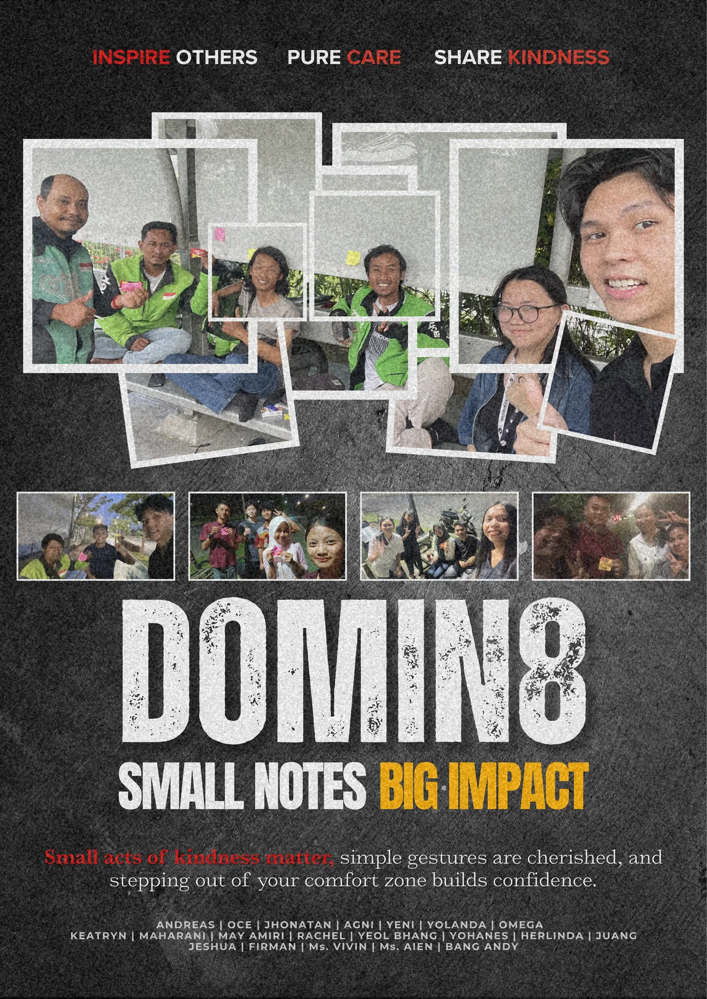

A cinematic social awareness poster that turns a simple act of kindness into a dramatic,
emotionally engaging narrative for the campus community.
01. Background
The Context
Creating a visually engaging campaign poster focused on promoting empathy and positive
social interaction.
02. Concept
Creative Direction
Applying cinematic movie-poster aesthetics and emotional storytelling to strengthen
audience engagement.
03. Execution
Visual Delivery
Combining expressive composition, typography, and layered visuals to create a memorable
campaign experience.
Design Showcase
Explore the Social Awareness Poster
The full cinematic artwork, presented at high resolution. Click the poster to open the lightbox
and take in the layered composition.
palette Visual Design
A Heroic Frame for Everyday Empathy
Movie-poster framing, dramatic lighting, and layered type give the message a sense of
scale, turning a small gesture into something worth paying attention to.
zoom_in
Click the poster to view it in high resolution

01. Background
Context & Background
This project was designed as part of a social awareness campaign intended to encourage empathy, kindness,
and positive interaction within the university environment.
The objective was to transform a simple act of kindness into a visually compelling narrative capable of
emotionally engaging viewers.
02. Concept
Creative Direction
The visual direction was heavily inspired by cinematic movie-poster aesthetics, combining emotional
storytelling with dramatic composition techniques.
Cinematic Layout: Applying movie-poster inspired framing and visual hierarchy.
Emotional Storytelling: Highlighting meaningful social interaction through
expressive visuals.
Layered Composition: Combining typography, imagery, and depth effects for stronger
narrative impact.
03. Execution
Delivery & Output
The poster was designed digitally using Canva with a strong focus on cinematic presentation, emotional
resonance, and visual clarity.
The final result successfully communicates a heroic and inspirational atmosphere while maintaining a
modern and visually engaging campaign style.